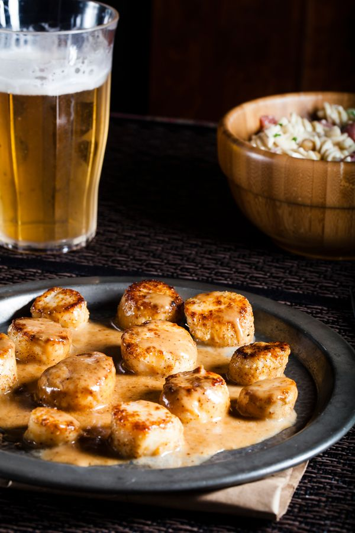

Noix de St Jacques à la crème
Difficultée :
Facile
Ingrédients :
- Poivre
- Sel
- 1.5 cuillère à café de curry en poudre
- 25 noix de saint-jacques
- 19cl de crème
Préparation :
- Faire revenir les noix de St jacques salées, poivrées 1 à 2 minutes de chaque côtés.
- Pendant ce temps, chauffer la crème fraîche avec du curry dedans.
- Ajouter la crème-curry aux noix de St Jacques et laisser 1 à 2 minutes.
- Servir avec des tagliatelles fraîches ou des spaghetti frais.

Informations Nutritionnelles :
- Calories : 69
- Glucides : 3.2g
- Protéines : 12.1
- Lipides : 0.5g
- Fibres : 0g